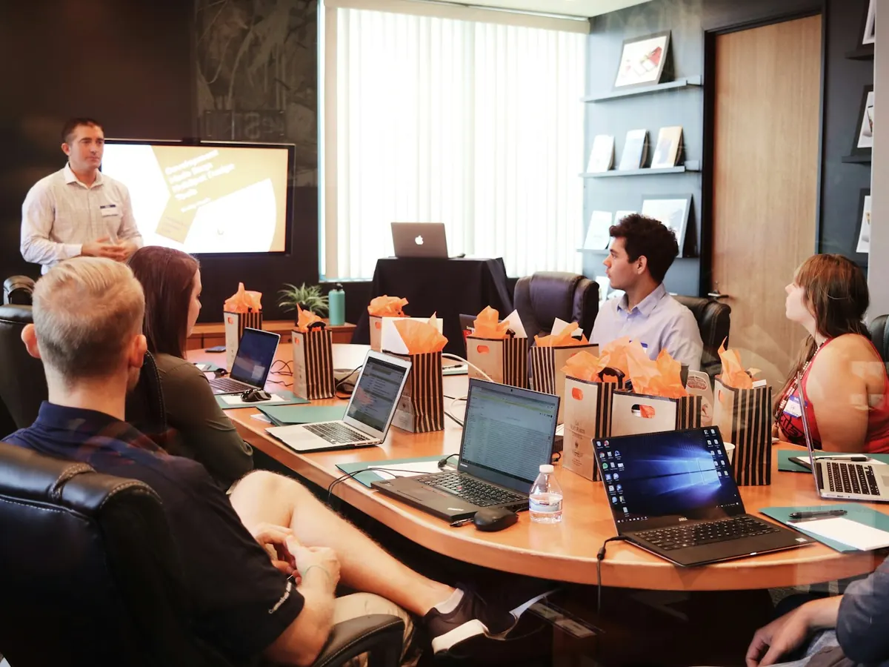
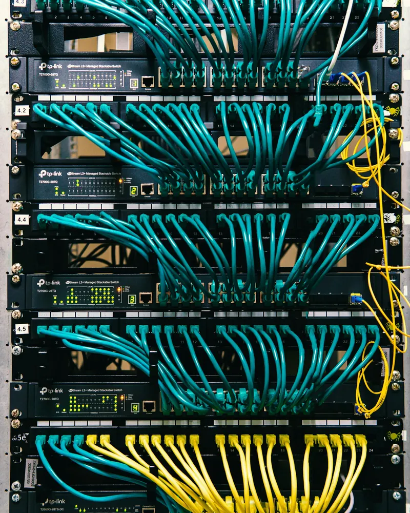

Cybersécurité des PME : protéger votre entreprise sans complexité
Faux e-mails de fournisseurs, rançongiciels, comptes piratés : les petites entreprises sont aujourd'hui des cibles comme les autres. Nous mettons en place les protections essentielles et formons vos équipes aux bons réflexes.
Les attaques ne visent pas que les grandes entreprises
Un e-mail qui imite parfaitement votre fournisseur et demande de changer de RIB. Un mot de passe réutilisé qui ouvre la messagerie du gérant. Un poste pas à jour qui laisse entrer un rançongiciel. Ces attaques sont automatisées et touchent les structures de toutes tailles.
La bonne nouvelle : quelques protections bien choisies et des équipes attentives suffisent à éviter la grande majorité des incidents.
- Une demande urgente de virement ou de changement de coordonnées bancaires
- Un e-mail d'un « dirigeant » qui demande la plus grande discrétion
- Des fichiers renommés ou impossibles à ouvrir
- Des connexions à vos comptes depuis l'étranger
- Un ordinateur qui ralentit soudainement sans raison
Les protections que nous mettons en place
Une sécurité par couches : si l'une est contournée, les autres prennent le relais.
Antivirus managé (EDR)
Chaque poste et serveur protégé et surveillé depuis une console centrale. En savoir plus sur notre gestion antivirus.
Pare-feu et réseau
Filtrage des connexions, Wi-Fi invités séparé, VPN sécurisé pour le télétravail.
Double authentification
Un code sur le smartphone en plus du mot de passe pour la messagerie et les outils sensibles.
Mises à jour maîtrisées
Systèmes et logiciels à jour, pour fermer les failles connues avant qu'elles ne soient exploitées.
Accès et mots de passe
Chacun n'accède qu'à ce dont il a besoin, gestionnaire de mots de passe, comptes fermés au départ des salariés.
Mesures RGPD
Chiffrement des postes, contrôle des accès, journalisation et procédure en cas de fuite de données.

Vos équipes, première ligne de défense
La plupart des incidents commencent par un clic. Former vos salariés aux bons réflexes est l'une des protections les plus efficaces, et l'une des plus simples à mettre en place.
- Reconnaître un e-mail piégé ou une fausse demande de virement
- Choisir et gérer ses mots de passe
- Savoir quoi faire, et qui prévenir, en cas de doute
Notre accompagnement
Une démarche progressive, adaptée à la taille de votre structure.
-
Diagnostic
État des lieux de vos postes, réseau, comptes et sauvegardes.
-
Plan d'action
Les mesures prioritaires, mises en place sans perturber votre activité.
-
Suivi
Surveillance, mises à jour et point régulier sur votre niveau de sécurité.
Cybersécurité : vos questions

Une petite entreprise est-elle vraiment visée ?
Oui. La plupart des attaques sont automatisées et ne choisissent pas leur cible : elles exploitent un mot de passe faible, un poste pas à jour ou un salarié qui clique sur un lien piégé. Les petites structures sont même souvent moins protégées.
Par quoi commencer ?
Par un diagnostic. Dans la majorité des cas, quelques mesures simples (mises à jour, double authentification, sauvegardes isolées, antivirus managé) réduisent déjà fortement les risques.
Qu'est-ce qu'un antivirus managé (EDR) ?
Une protection installée sur chaque poste et serveur, pilotée depuis une console centrale. Elle repère les comportements suspects, comme un rançongiciel qui commence à chiffrer des fichiers, et nous alerte pour intervenir rapidement.
Formez-vous les salariés ?
Oui, avec des sessions courtes et concrètes : reconnaître un e-mail piégé, choisir de bons mots de passe, réagir en cas de doute. C'est l'une des protections les plus efficaces.
Que faire si nous sommes victimes d'une attaque ?
Appelez-nous immédiatement et isolez les postes touchés du réseau. Nous contenons l'incident, restaurons vos données depuis les sauvegardes et vous accompagnons dans les démarches, dont le signalement sur cybermalveillance.gouv.fr.
Nos autres services aux entreprises
Retrouvez l'ensemble de notre offre sur la page infogérance et maintenance pour les PME.
- Maintenance informatique
- Téléphonie VoIP
- Microsoft 365 et messagerie
- Sauvegarde
- Antivirus managé
- Formations en entreprise
Nous intervenons dans vos locaux, de Fréjus à Monaco

Protégez votre entreprise dès aujourd'hui
Un diagnostic de sécurité, puis des mesures concrètes et adaptées.